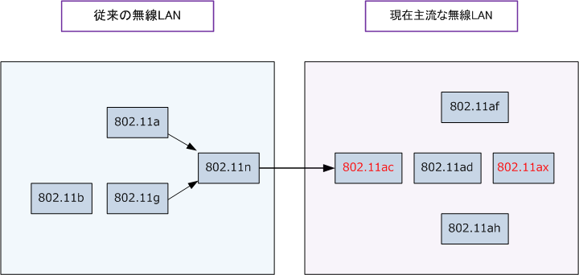
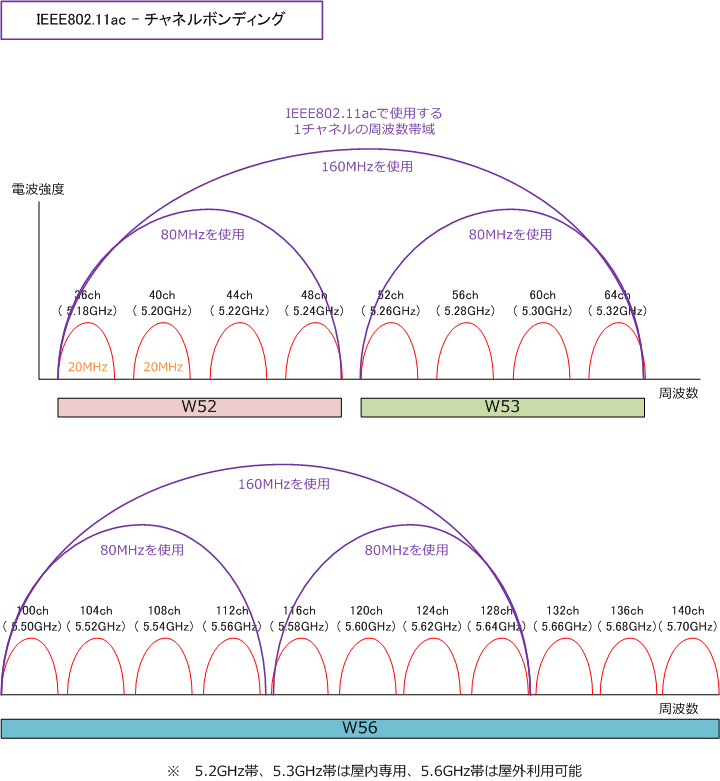
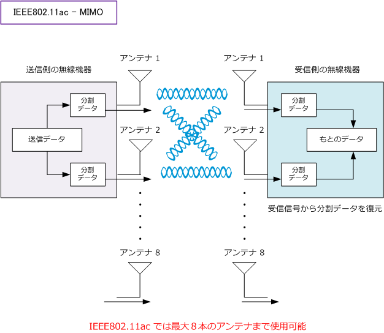
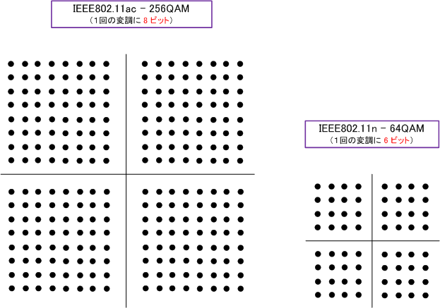
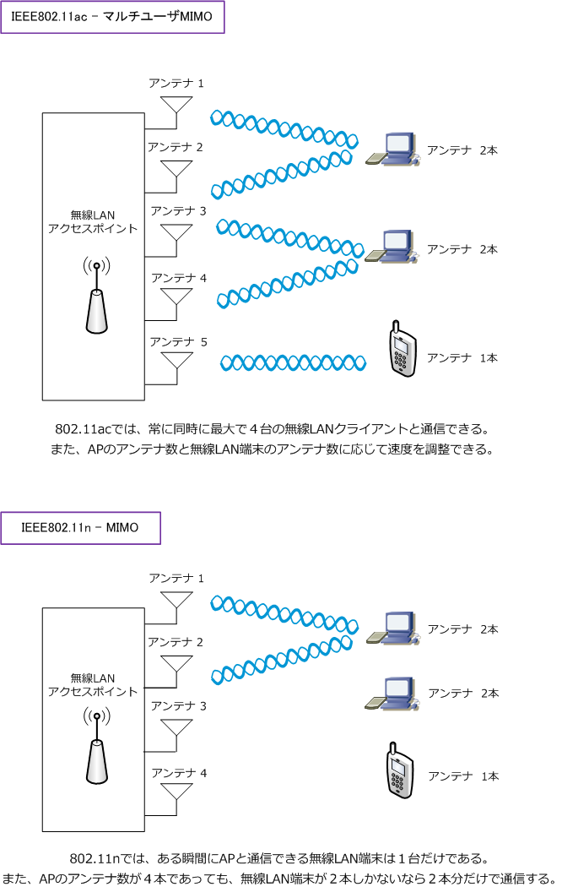

802.11ac - Wi-Fi 5
IEEE802.11acとは
IEEE802.11acは、理論上6.93Gbpsの超高速通信を実現した無線LANの伝送規格です。IEEE802.11n の 拡張技術を使用しており、IEEE802.11nの後継となる第5世代の規格です。802.11n 同様のカバレージを 実現し利用帯域の拡大（160MHz）変調方式の向上（256QAM）MIMO（8SS）MU-MIMOで高速化を実現。

IEEE802.11ac 仕様一覧
| 無線LANの伝送規格 | IEEE802.11ac |
|---|---|
| 周波数帯域 | 5 GHz帯のみ |
| 最大伝送速度 | 6.93 Gbps |
| 無線アクセス方式 | OFDM |
| 変調方式 | 256QAM |
| 空間多重数（最大） | 8 × 8 |
| 周波数帯域幅（最大） | 160MHz |
| 新機能 | MU-MIMO（マルチユーザMIMO） |
| 策定時期 | 2013年 |
※ IEEE802.11acの理論上の最大速度6.93Gbpsを実現する前提は 「160MHz帯域、8ストリーム、256QAM」 であることです。
IEEE802.11ac - チャネルボンディングの拡張
チャネルボンディングとは、無線LANの周波数帯域で隣り合う2つのチャネルを束ねて通信する技術です。 802.11a/b/gでは1つのチャネルが使用する帯域は20MHzでしたが、802.11nでは2チャネル分の40MHz として通信できるので伝送速度は2倍以上となります。802.11acでは最大で8チャネル分の160MHzとして 通信できるので伝送速度は8倍となります。802.11ac 必須規定は「80MHz」、最大は「160MHz」です。

IEEE802.11ac - MIMOの拡張
MIMO（Multiple Input Multiple Output）とは、複数のアンテナを使用してデータを同時伝送することで 無線通信を高速化させる技術です。例えば、送信機器、受信機器ともに２つのアンテナがあるとしましょう。
下図では送信機器でデータを2分割して、2つのアンテナでその分割データを送信し、受信機器はその分割 データを2つのアンテナで受信して元のデータに復元します。このように複数のアンテナを使用することで 生じる複数の経路を1つの伝送路として見なし、データを送受信することで高速化を実現するのがMIMOです。

複数のアンテナを1つの伝送路として使用するMIMOでは、当然アンテナ数が多いほど速度が速くなります。 IEEE802.11nでは最大で4本（送信4本、受信4本）使用することが可能でした。そしてIEEE802.11acでは 最大8本（送信8本、受信8本）使用することが可能です。※ アンテナ送信8本、受信8本は8×8と表します。
IEEE802.11ac - 変調方式の効率化
変調はデジタル信号を電波として送信できるように信号を変換することですが、1回の変調（1シンボル）で 多くの情報量を送信できれば通信速度が速くなります。IEEE802.11nの64QAMでは6ビット（2の6乗 = 64） の信号を送信可能であるのに対し、802.11acの256QAMでは8ビット（2の8乗=256）情報を1度に送信可能。

IEEE802.11ac / IEEE802.11n 比較表
| 機能 | IEEE802.11n | IEEE802.11ac |
|---|---|---|
| チャネルボンディング | 最大40MHz | 最大160MHz |
| MIMO | 4×4 | 8×8 |
| 変調方式 | 64QAM | 256QAM |
IEEE802.11ac 新機能 - マルチユーザMIMO
802.11a/g/nの従来規格では、無線LANデバイスとアクセスポイントが通信するその瞬間（まさに一瞬）は、 無線LANクライアントとAPは1台ずつしか通信しかできませんでしたが、802.11acでは最大4台の無線LAN デバイスと同時に通信できます。つまり802.11acのMU-MIMOはスイッチングハブを提供する技術と言えます。
